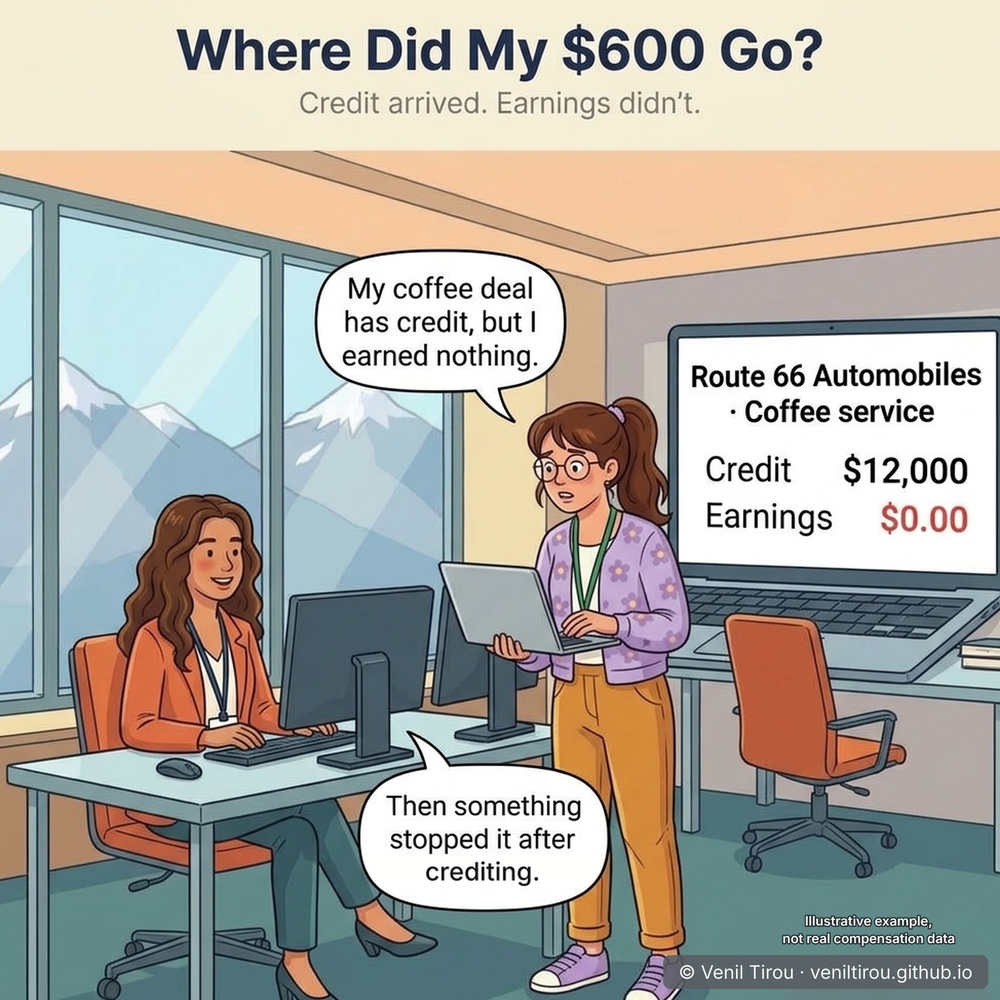
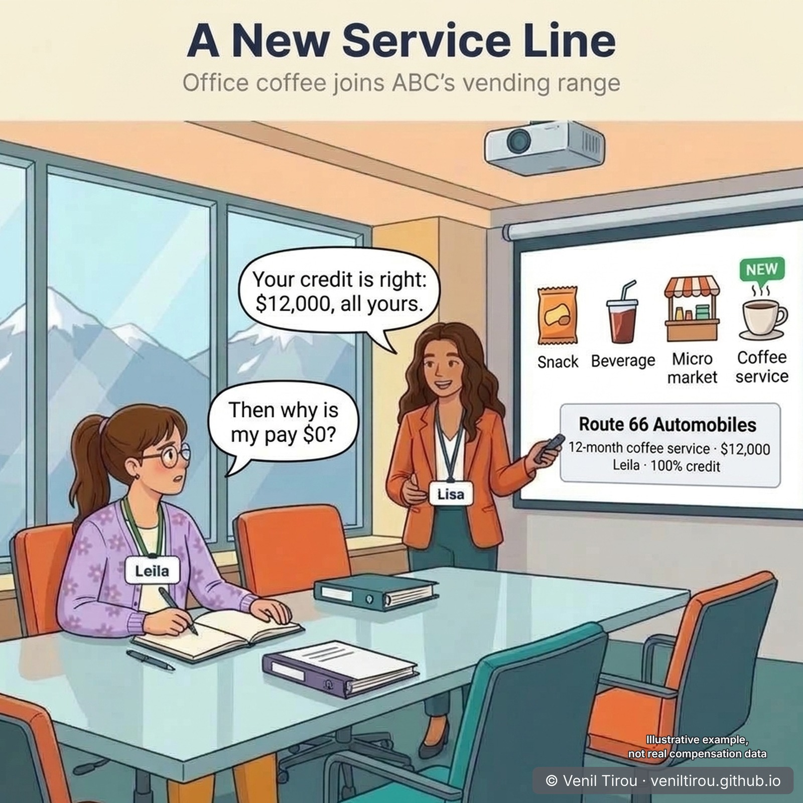
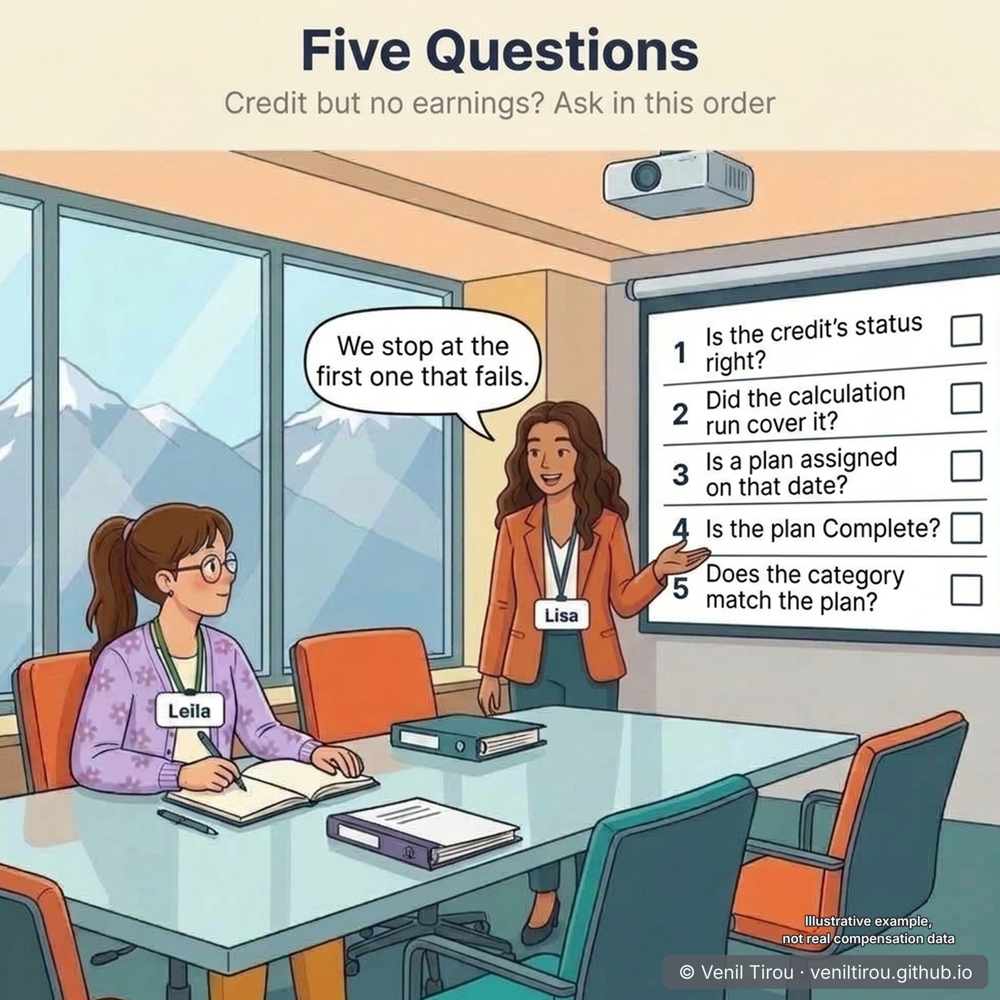
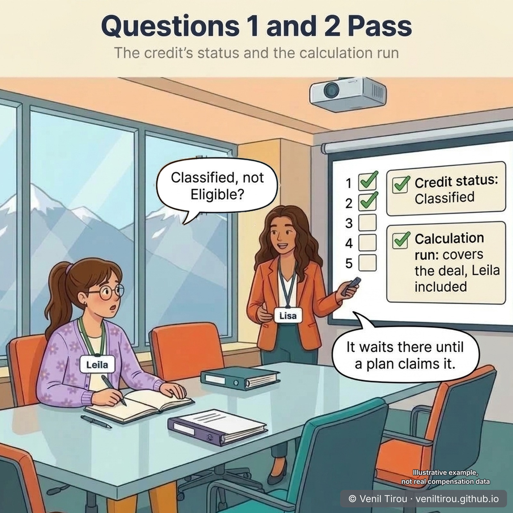
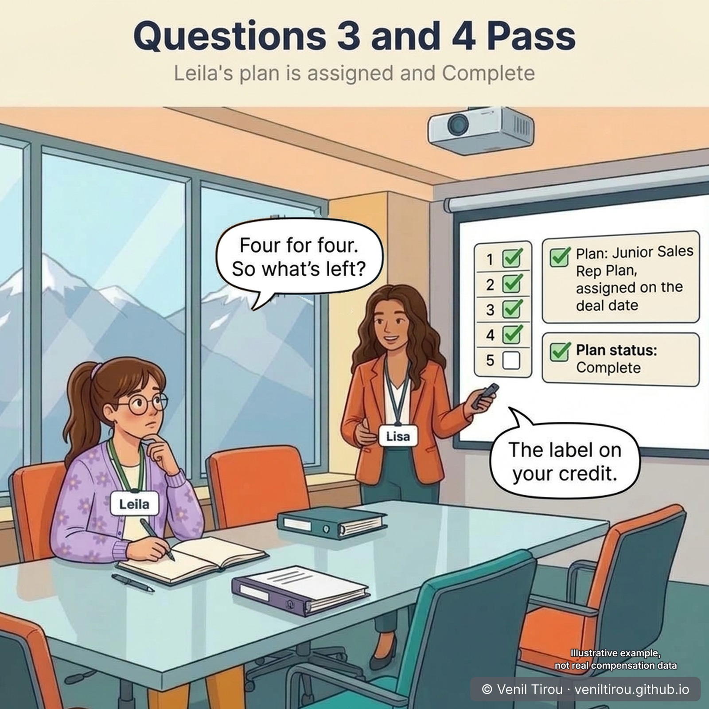
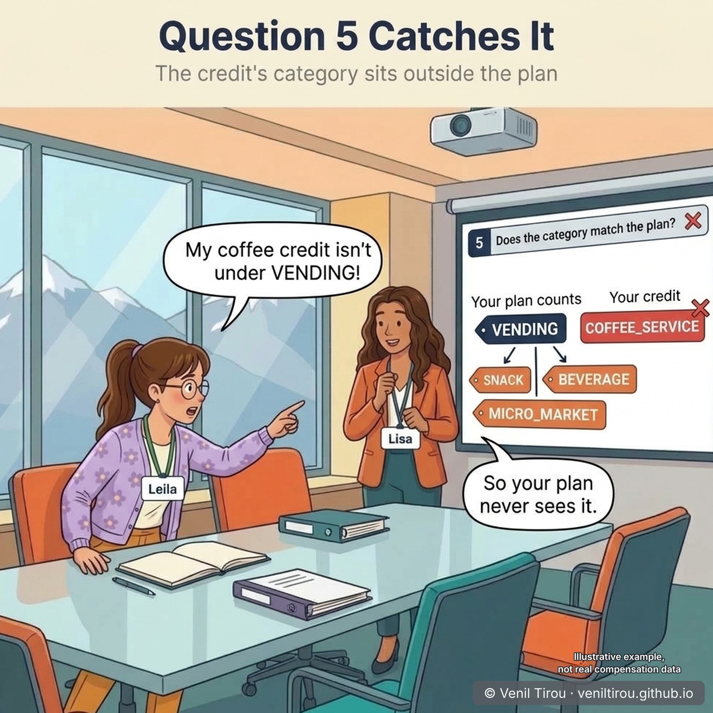
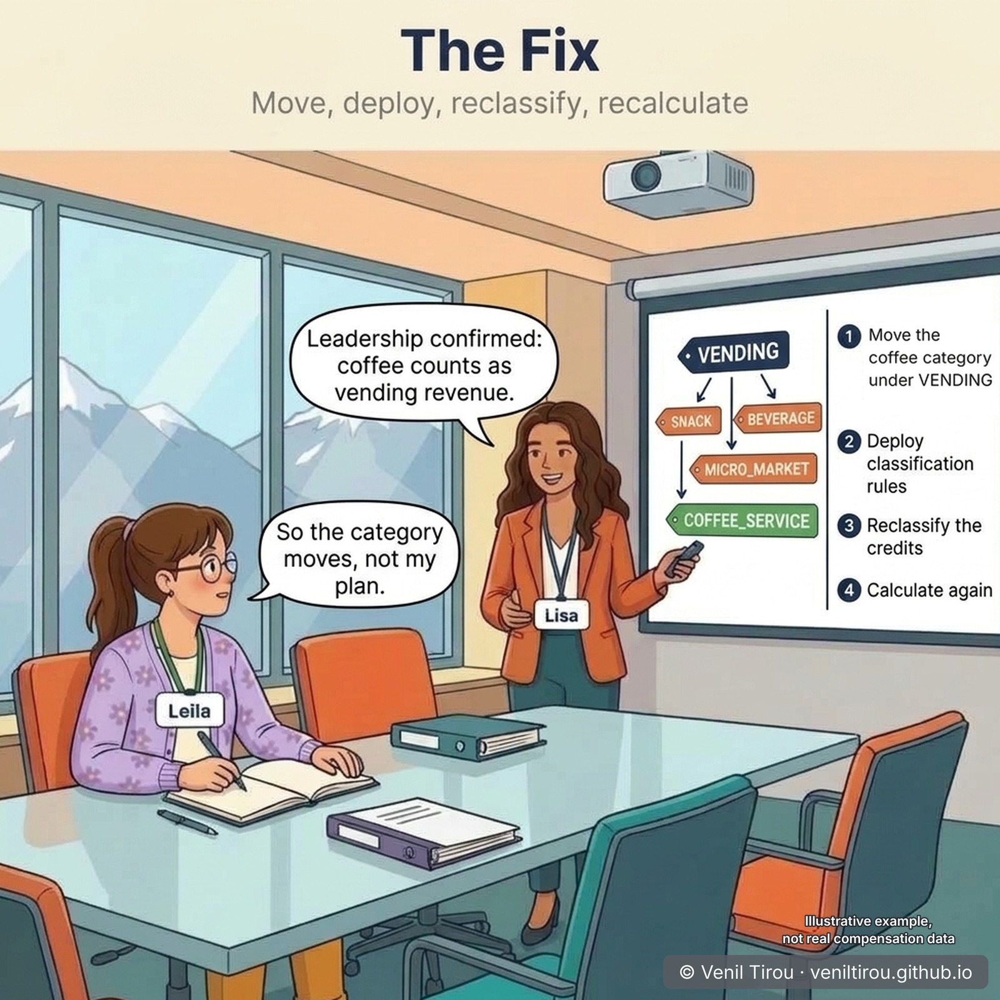
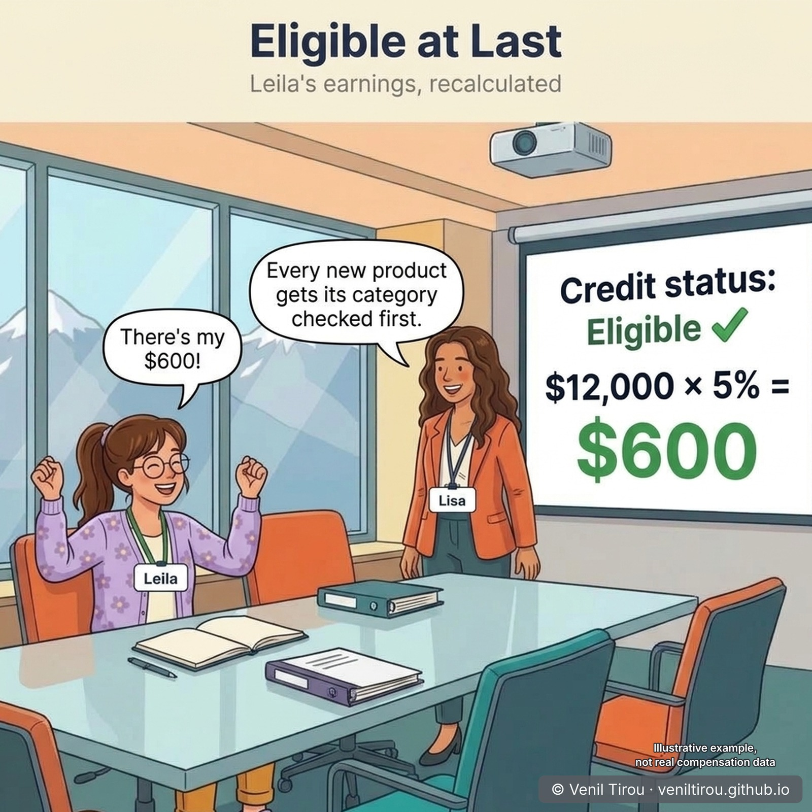

Five Questions Before Payday — Where Did Leila's $600 Go?
Leila closes her first solo deal. The credit arrives, $12,000 of it, but her earnings say $0.00. Lisa doesn't guess. She asks five questions in a fixed order, the same order as Oracle's own troubleshooting topic, and stops at the first one that fails. Four pass. The fifth finds the cause: a new product's credit category created in the wrong place. To see this path working as it should, read From Order to Earnings; this chapter is what to do when it doesn't.
Leila's Junior Sales Rep Plan has a Vending Revenue measure that counts the credit category VENDING and its children, SNACK, BEVERAGE and MICRO_MARKET, at 5%. She expects $600. Her earnings show $0.00. ABC classifies after crediting and rollup, just before calculation. Lisa, ABC's compensation analyst, takes the case.
👥 Characters in This Chapter
Lisa (ORANGE blazer) — Compensation Analyst at ABC Corporation; she asks the five questions on the projectorLeila (FLORAL cardigan, glasses) — junior sales rep whose first solo deal earned nothing
📱 On mobile? Pinch to zoom to read the numbers clearly.
Prologue — Where Did My $600 Go?

Scene 1 — A New Service Line

Scene 2 — Five Questions

Scene 3 — Questions 1 and 2 Pass

Scene 4 — Questions 3 and 4 Pass

Scene 5 — Question 5 Catches It

Scene 6 — The Fix

Scene 7 — Eligible at Last

The Five Questions — Credit Exists, Earnings Don't
Ask them in this order and stop at the first that fails.
| # | Question | Where to look | If it fails |
|---|---|---|---|
| 1 | Is the credit's status right for your classification setting? | Manage Parameters: Classify Transactions. Manage Credits: the credit's status (Classified when classification runs after crediting) | Run the missing process (Classify Credits, Run Crediting, Run Rollup), then calculate again |
| 2 | Did the calculation run cover the credit? | Calculate Incentive Earnings: From Date, To Date and participants | Submit a new run with the right dates and participant |
| 3 | Is a plan assigned on the credit's date? | Participant Snapshot work area | Assign the plan, run Deploy Compensation Plans, calculate again |
| 4 | Is the plan Complete? | Compensation Plans work area: the plan's status | Complete the plan, then calculate again |
| 5 | Does the credit's category match the plan? | The credit's category against the measure's; the hierarchy lives in Classification Rules | Fix the hierarchy, deploy, reclassify and recalculate; or change the plan's category |
| — | All five pass? | Participant Snapshot: the plan's details | Last resort: remove and re-add the plan, Deploy Compensation Plans, calculate again |
Source: Oracle, Credits Not Processed or Have Eligibility Error.
Why This Chapter Matters
The takeaway: "credit but no earnings" is a narrower problem than it looks. Crediting has already worked, so everything that can go wrong sits in five places between the credit and the paycheck, and asking about them in order turns a puzzling $0 into a short checklist.
Leila's case got all the way to the fifth question because nothing about her setup was wrong. The gap was in a category created for a new product, by someone who never touched her plan. That is the usual shape of this problem: a change in one corner of the setup quietly stops earnings in another. The lesson for sales ops: every new product gets its category checked before its first deal closes.
Concepts Covered
| Concept | What it means | Scene |
|---|---|---|
| Credit but no earnings | Crediting worked, so the cause lies between crediting and calculation: status, the run, the plan or the category. | Prologue |
| Classified and Eligible | Classified: the credit has its category. Eligible: calculation found a measure on the participant's plan that the category matches. | 3, 7 |
| When to Classify Transactions | The parameter that decides which status a credit should have before calculation: Classified when classification runs after crediting and rollup. | 3 |
| Calculate Incentive Earnings | Picks up only credits whose source event date is inside its From and To dates, for the participants it includes. | 3 |
| Plan assignment and status | A participant needs a plan assigned on the credit's date, and every assigned plan must be Complete. | 4 |
| Credit category hierarchy | A measure counts its own category and that category's children. A category outside the branch a measure counts never reaches it. | 5 |
| Deploy Classification Rules | Must run after classification rules change, and before Classify Credits uses them. | 6 |
| Reclassify and recalculate | After a category fix, the existing credits are classified again, then calculation runs again. | 6, 7 |